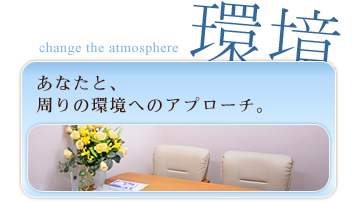

この10年ほどでどんどん新しい相談室が増えてきています。その中で、東京メンタルヘルスは約30年の長い歴史と共に、その経験を重ねて来ました。
古くからカウンセリングに関わり、様々なケースのご相談を受ける中で、その人それぞれの想い・悩みと真剣に向き合ってきました。
悩みは人によってそれぞれ異なりますが、私たちの重ねてきた多くの経験は、必ずあなたのお役に立てると思っています。
毎日の中には、いくつもの小さな不安や苦しみが隠れています。
気づかないうちにそれが重なり、大きくなり、だんだん自分ではどうしようもなくなって、
怖くなって、どうしていいのか分からなくなって・・・
そんな苦しい本当の気持ちを隠して、毎日を送ってはいませんか？
気づかないうちにそれが重なり、大きくなり、だんだん自分ではどうしようもなくなって、
怖くなって、どうしていいのか分からなくなって・・・
そんな苦しい本当の気持ちを隠して、毎日を送ってはいませんか？
例えば、本当はこんな風に思っているのに、周りから誤解されてしまったり、
もしくは誤解されているんじゃないかと不安になったり、
ひとりで考えて思い詰めてしまったり、どうしたらいいのか何も分からなくなってしまったり・・・
そんな不安にかられてしまったとき、話だけでも聞いてもらえる人がいたら・・・
もしくは誤解されているんじゃないかと不安になったり、
ひとりで考えて思い詰めてしまったり、どうしたらいいのか何も分からなくなってしまったり・・・
そんな不安にかられてしまったとき、話だけでも聞いてもらえる人がいたら・・・
そんな心からの本音の苦しみ・悩みに、一緒に悩み、考え、寄り添うことが、
私たちにできるあなたへのカウンセリングです。
カウンセリングに行くなんて、恥ずかしい。
こんな自分はダメなんじゃないか。
自分のことなんか分かるはずがない。
本当の事なんて、怖くて誰にも話すことなんてできない。
そんな風に思わないで欲しいと、私たちは心から願っています。
なぜならそれは、あなたのパーソナリティや、心の成長が生まれる大きな一歩だからです。
あなたのこの一歩が、あなたや、あなたのご家族やご友人にとって、
新しい自分との出会いや光に満ち溢れた道になるように。
笑顔で毎日を過ごすことができるように。
あなた自身と向き合い、あなた自身を認め、自分自身とどう付き合っていくのか、
癒しとは、孤独とは、こころとは何なのかを共に考え、道が開けていくように。
そして、あなたにとって大切で、貴重な時間にできるように、共に歩いていきましょう。
あなたが開く「とびら」は、すぐ側にあります。
こんな自分はダメなんじゃないか。
自分のことなんか分かるはずがない。
本当の事なんて、怖くて誰にも話すことなんてできない。
そんな風に思わないで欲しいと、私たちは心から願っています。
なぜならそれは、あなたのパーソナリティや、心の成長が生まれる大きな一歩だからです。
あなたのこの一歩が、あなたや、あなたのご家族やご友人にとって、
新しい自分との出会いや光に満ち溢れた道になるように。
笑顔で毎日を過ごすことができるように。
あなた自身と向き合い、あなた自身を認め、自分自身とどう付き合っていくのか、
癒しとは、孤独とは、こころとは何なのかを共に考え、道が開けていくように。
そして、あなたにとって大切で、貴重な時間にできるように、共に歩いていきましょう。
あなたが開く「とびら」は、すぐ側にあります。

もともと、東京メンタルヘルスは家族や組織へアプローチ
していくことからスタートさせ、今ではそれが専門分野となりました。
これは、虐待や夫婦の問題から始まり、直接的でなくとも間接的にそれらの影響を受けられた場合など、決して少な
くないことです。
苦しい環境にいたからこそ苦しんできたけど、その苦しみこそが健全さの「存在」を意味しています。
短期の支援だけでなく、長期に亘った支援が必要な場合も安定した組織へ向かいながら、安心して取り組んでいただ
けます。
現在は、心理療法の中で認知行動療法をはじめ、長期に亘
り取り組みを続けています。
していくことからスタートさせ、今ではそれが専門分野となりました。
これは、虐待や夫婦の問題から始まり、直接的でなくとも間接的にそれらの影響を受けられた場合など、決して少な
くないことです。
苦しい環境にいたからこそ苦しんできたけど、その苦しみこそが健全さの「存在」を意味しています。
短期の支援だけでなく、長期に亘った支援が必要な場合も安定した組織へ向かいながら、安心して取り組んでいただ
けます。
現在は、心理療法の中で認知行動療法をはじめ、長期に亘
り取り組みを続けています。